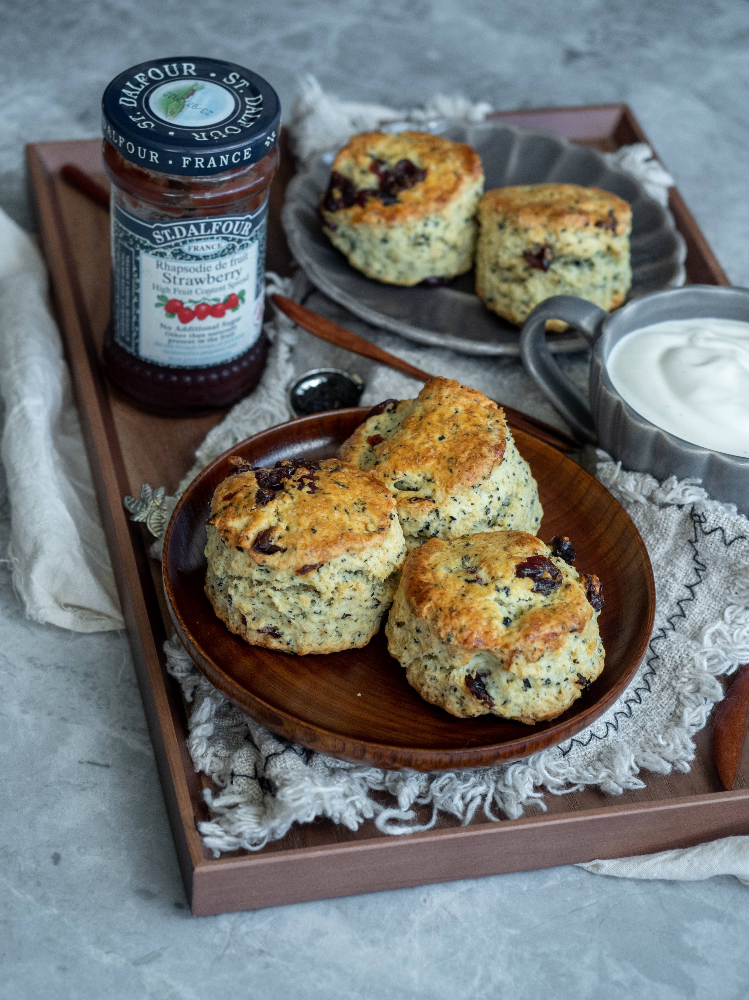

Scone
Description
A basic scone recipe that really does the trick. Tried and tested through 3 generations of kids. Simply the best anywhere!
Ingredients
- 1 cup sour cream
- 1 teaspoon baking soda
- 4 cups all-purpose flour
- 1 cup white sugar
- 2 teaspoons baking powder
- ¼ teaspoon cream of tartar
- 1 teaspoon salt
- 1 cup butter
- 1 egg
- 1 cup raisins (Optional)
Steps
- In a small bowl, blend the sour cream and baking soda, and set aside.
- Preheat oven to 350 degrees F (175 degrees C). Lightly grease a large baking sheet.
- In a large bowl, mix the flour, sugar, baking powder, cream of tartar, and salt. Cut in the butter. Stir the sour cream mixture and egg into the flour mixture until just moistened. Mix in the raisins.
- Turn dough out onto a lightly floured surface, and knead briefly. Roll or pat dough into a 3/4 inch thick round. Cut into 12 wedges, and place them 2 inches apart on the prepared baking sheet.
- Bake 12 to 15 minutes in the preheated oven, until golden brown on the bottom. bubbling and the cheese has melted, about 30 minutes. Remove foil and bake until cheese has begun to brown, about 10 more minutes. Allow to stand at least 10 minutes before serving.